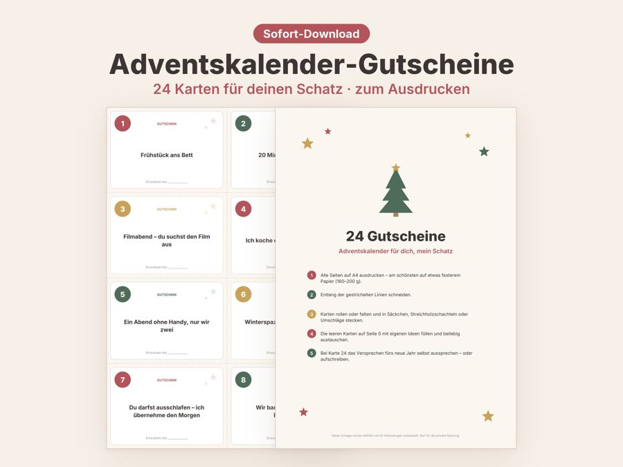
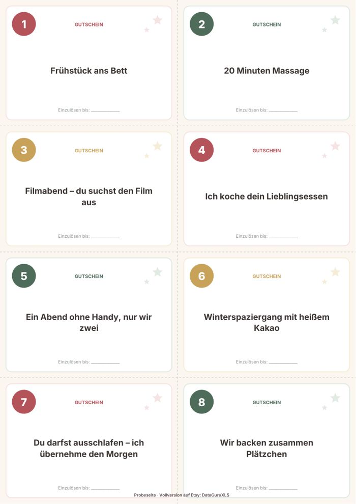

Adventskalender Gutscheine zum Ausdrucken
Ein Adventskalender mit Gutscheinen schenkt Zeit statt Zeug. Lade dir eine kostenlose Seite mit sechs fertigen Gutscheinen herunter und erfahre, wie du daraus in einer Stunde einen Kalender für deinen Partner oder deine Partnerin bastelst.


Kostenlose Probeseite herunterladen
Sechs fertige Gutscheine für den Advent (1 Seite, A4).
PDF herunterladen (kostenlos)So wird aus Gutscheinen ein Adventskalender
Viele Paare haben schon alles. Was fehlt, ist gemeinsame Zeit. Genau die verschenkst du mit einem Gutschein-Adventskalender: ein Frühstück im Bett, ein Spieleabend, ein Spaziergang mit heißem Kakao. Jedes Türchen ist eine kleine Verabredung.
Anleitung in fünf Schritten
- Gutscheine auf Papier mit 120 bis 200 g/m² drucken, dann sieht es hochwertiger aus.
- An den gestrichelten Linien ausschneiden und die Zahlen 1 bis 24 gut sichtbar lassen.
- Karten zusammenfalten oder einrollen und in Umschläge, Säckchen oder Streichholzschachteln stecken.
- Mit Wäscheklammern an eine Schnur hängen, in 24 Gläser stellen oder in einen Karton legen.
- Lege fest, wann jeder Gutschein eingelöst wird, und trage es in euren Kalender ein.
Ideen, damit die Gutscheine auch eingelöst werden
- Mische kleine Gesten (ein Kompliment, eine Umarmung) mit größeren Dingen (ein Ausflug, ein Abendessen).
- Plane Gutscheine ein, die dir selbst Spaß machen. Dann freut ihr euch beide.
- Berücksichtige die Wochentage: Das Wochenende ist ideal für Ausflüge, wochentags passen Massagen oder ein Filmabend.
- Lass ein paar Karten leer, damit der oder die Beschenkte eigene Wünsche eintragen kann.
- Das funktioniert auch für Kinder, Eltern oder Freunde. Passe einfach die Texte an.
Starte mit der Probeseite, schau, wie die Karten wirken, und entscheide dann, ob du den kompletten Kalender möchtest.
Häufige Fragen
Wann sollte ich den Kalender vorbereiten?
Plane etwa eine Stunde ein und fange Mitte November an. So bleibt Zeit, Gutscheine mit Terminen abzustimmen und Zutaten oder Tickets zu besorgen.
Welches Papier eignet sich?
Für Karten empfiehlt sich Papier mit 120 bis 200 g/m². Dünneres Papier funktioniert auch, knickt aber leichter, wenn du die Karten faltest oder in Säckchen steckst.
Darf ich die Probeseite weitergeben?
Die Datei ist für deinen privaten Gebrauch gedacht. Du kannst sie beliebig oft ausdrucken, aber bitte nicht weiterverkaufen oder an anderer Stelle zum Download anbieten.
Vollversion auf Etsy
Die Vollversion enthält 24 Gutscheine für den ganzen Advent plus Anleitung und leere Karten, die du selbst beschriften kannst.
Alle 24 Gutscheine auf Etsy ansehen